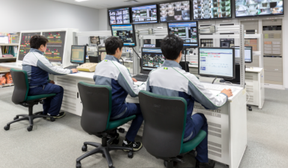
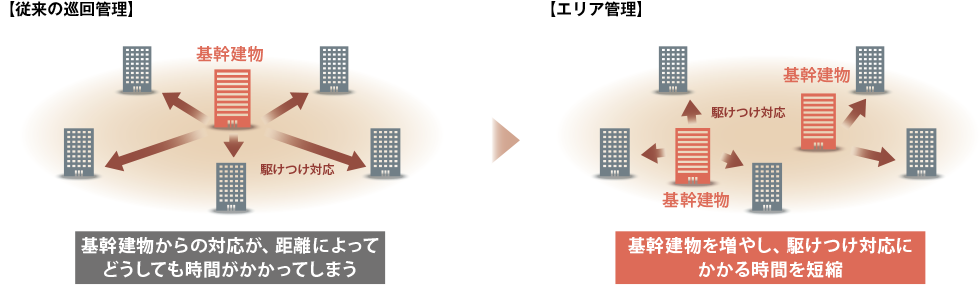
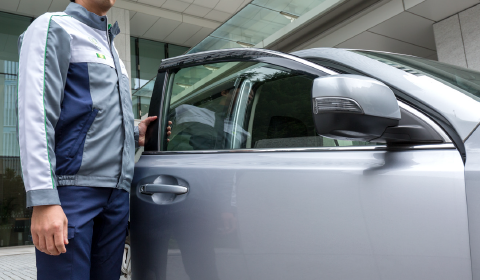
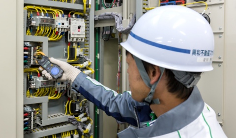

途切れることのない「安全･安心･快適」を、プロの目と技術で守り、高める。
高度にインテリジェント化された大規模な建物から築年数の経過した中小規模の建物まで、建物に応じた最適かつ高品質な設備管理サービスを、専門的な資格・スキルを有するプロフェッショナル集団がご提供します。常駐及び巡回管理から保全、警備に至る幅広いサービスで、建物の安全・安心・快適を高いレベルで維持すると共に、常駐管理の建物と近傍の巡回管理の建物との連携を図ったエリア管理を推進するなど、お客様のニーズや不測の事態に即応できる体制を整備しています。
常駐管理
設備員が建物に常駐し、設備の監視・点検・記録、お客様対応を行います。設備員による点検・記録とBAS（ビル・オートメーション・システム）のデータをもとに、機器劣化や性能維持に関わる傾向管理を実施。また、問題点をいち早く明らかにし、適切な中長期営繕計画につなげるプロアクティブな管理に努めています。空調の調整や照明管球の交換など、常駐ならではのきめ細やかなサービスはもとよ り、トラブル発生時の応急的な対応をはじめ、現場を知り尽くしたプロの視点で、原因究明から対応策のご提案まで幅広く対応します。
巡回管理
 設備員が常駐しない建物においては、定期的な巡回点検及び24時間365日体制の緊急対応により、休日・夜間でも安全・安心を確保しています。さらに、当社が常駐管理する基幹建物との連携を図った「エリア管理」体制を各地で推進。基幹建物の設備員がエリア内の建物の巡回点検を担当すると共に、万一トラブルが発生した際は迅速な応援駆けつけ対応を行うなど、高品質な管理サービスをローコストでご提供します。
建物･設備保全業務
建物の資産価値を維持し、健全な状態を保つためには、電気・空調・衛生・消防・昇降機設備などの点検と定期的なメンテナンスが不可欠です。当社では、各法令で義務付けられている「法定保守点検」に加え、建物の規模・設備内容・築年数に応じた効果的なメンテナンスをご提案しています。高い専門知識を有する経験豊富な有資格者が、法令や多岐にわたる規程などのコンプライアンスを常に意識した各種検査・点検を実施。建物のライフサイクルマネジメントの最適化を実現します。
警備業務
事故や犯罪の発生を未然に防ぐため、専門の教育・訓練を受けた警備員を配置し、施設や敷地に出入りする人・物・車両等の出入りを監視します。定期的または不定期に巡回監視することにより防犯効果を高め、施設に集うすべての人々の身体・財産を守り、危険を意識することなく快適に過ごせる環境を創出します。また、常駐施設警備だけでなく、オフィス移転や工事中の立会業務等、期間限定の臨時警備も承ります。さらに、設備故障発見時には設備員に迅速且つ的確な報告を行い、事故防止に努めます。災害時の緊急誘導等にも対応します。
お問い合わせはこちら